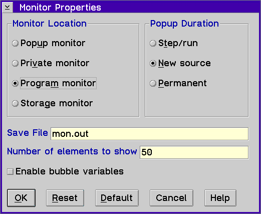

Displays the Monitor Properties window, which allows you to select the settings for monitoring variables or expressions.

Use the Monitor Properties window to set the following:
Monitor Location Group Heading
Choose one of the following radio buttons to select the monitor window that opens when you select a variable or expression to monitor. The selections you can make, and the corresponding windows, are:
Popup
Save File Entry Field
Use this field to identify the file where all monitor windows will write their contents when the Save to file choice is selected.
Number of elements to show entry field
Use this field to identify the maximum number of structure or class elements that will be displayed at one time for a given variable in the monitors.
Enable bubble variables check box
Select this option if you want a bubble value for the contents of a variable to appear as you place the mouse or the variable in the Source, Disassembly, and Mixed view windows.
Popup Duration Group Heading
If you select Popup from the Monitor Location group heading, select one of the following radio buttons to specify how long the popup expression window displays:
Step/run